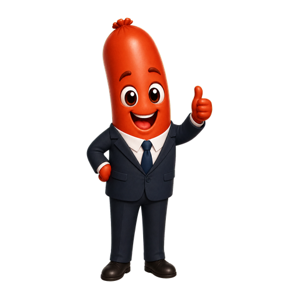

Week 1 - Lesson 3: Division of Powers & the Washminster System (~50–60 minutes)
Lesson Goal
Today’s big idea: Australia has a federal system with powers divided between federal and state governments. Our “Washminster” system blends the British Westminster model with American influences for stability.
Lesson question: Who has the power, and how does Australia stop too much power sitting in one place?
Main Content: Deborah Explains
Suggested time: 8–10 minutes
Australia does not give all government power to one group. Some powers belong mostly to the federal government, some belong mostly to the state governments, and some are shared or overlapping. This is called federalism.
The federal government deals with national issues such as defence, immigration, currency, foreign affairs, and trade with other countries. State governments deal with many everyday services, such as public schools, public hospitals, police, roads, and criminal law. Sometimes both levels are involved. For example, health, education, disaster response, housing, and infrastructure can involve both federal and state governments.
Australia’s system is sometimes called Washminster. This word combines Washington and Westminster. It means Australia borrowed ideas from both the United States and Britain, but mixed them into our own system.
British Westminster influences
Australia has a Prime Minister, Cabinet, ministers who sit in Parliament, an Opposition, and responsible government. Responsible government means the government must stay answerable to Parliament, especially the House of Representatives.
American influences
Australia has a written Constitution, federalism, a High Court that interprets the Constitution, and a Senate designed to represent the states.
Australian blend
Australia did not copy one system exactly. Parliament makes laws, but the Constitution limits what each level of government can do. The High Court can decide whether laws are valid. This helps divide and control power.
🐝 Deborah says: “Federalism is basically government job-sharing. Washminster is Australia saying, ‘We like this bit from Britain, this bit from America, and we’ll make it work our own way.’ Very practical. Very Australian.”
Activity 1: Democracy Sausage Power Sort
Suggested time: 10–12 minutes

🌭 Democracy Sausage says: “Help me sort these government jobs. Some are federal, some are state, and some are shared. Like onions. Sometimes they end up everywhere.”
Instructions: Click a card, then click the correct box. You can also drag cards on a computer. When all cards are placed, click Check answers.
Power cards
Federal Government
State Government
Shared or Overlapping
Place all cards into the boxes, then check your answers.
Activity 2: Whose Problem Is It?
Suggested time: 10–12 minutes
🐝 Deborah says: “Now apply the idea. Read each situation and decide which level of government is most likely involved.”
Activity 3: Parliament Prawn Builds Washminster
Suggested time: 12–15 minutes
🦐 Parliament Prawn says: “Australia did not copy one country’s system exactly. Sort each feature into British influence, American influence, or the Australian blend.”
Instructions: Click a card, then click the correct box. Look for clues: Prime Minister and Cabinet are Westminster ideas. Written Constitution, federalism and the High Court show American influence. Some cards describe Australia’s special blend.
Washminster feature cards
British Westminster influence
American influence
Australian blend
Place all cards into the boxes, then check your answers.
Activity 4: Too Much Power? Checks and Balances Challenge
Suggested time: 8–10 minutes
🦐 Parliament Prawn says: “When someone tries to use power, our system has limits. Choose which feature helps control the power.”
Power Control Score: 0 out of 5
Final Reflection: Build Your Explanation
Suggested time: 5–8 minutes
Question: Explain how Australia’s Washminster system helps divide and control government power.
Scaffolded paragraph
Australia divides power between the
government and the
governments. This is called
.
Australia’s system is sometimes called
because it combines British ideas, such as the Prime Minister and responsible government, with American ideas, such as a written Constitution and federalism. This helps democracy because power is
instead of being held by only one group.
Complete the dropdowns, then check your paragraph.
Write your own answer
Use the word bank to help you write 3–5 sentences.